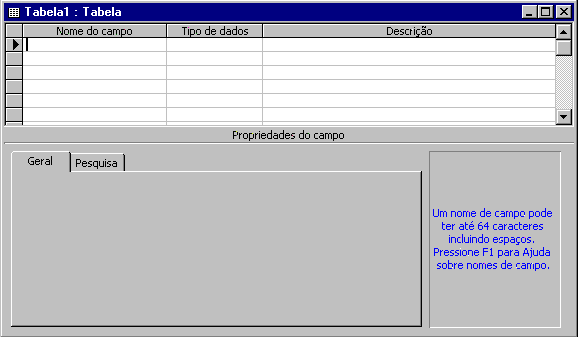

|
|
|
|
|
|
|
|
|
|
|
|
|
|
|
|
|
|
|
|
|
|
|
|
|
CURSO DE
MS ACCESS
(Os módulos desta seção não mais estarão sendo atualizados)
Este curso no formato Word97 em dois Volumes:
- Módulo I - a parte básica
e
- Módulo II - a parte mais avançada
Com suas respectivas Listas de Exercício:
- Aqui o sistema MDB completo do Curso
Online atualizado.
- O Sistema acima com outro visual
e para o Access2000 enviado pelo Tomaz VS Neto.
1) INTRODUÇÃO *
2) ALGUMAS NOVIDADES DO ACCESS *
3) ALGUMAS DEFINIÇÕES: *
5) PLANEJAMENTO DE UM BANCO DE DADOS *
DICAS *
MÁSCARAS *
CONCEITOS *
6.2) CHAVE PRIMÁRIA *
6.3) REMOVER UMA CHAVE PRIMÁRIA *
6.4) TABELA PRINCIPAL E SECUNDÁRIA *
6.5) CHAVES *
6.6) PESQUISA *
6.7) AUTONUMERAÇÃO *
6.8) TECLAS DE ATALHO *
6.9) AUTO AJUSTE DE LARGURA DE LINHAS E COLUNAS *
6.10) CONGELAR COLUNAS *
6.11) PROPRIEDADES DE CAMPOS *
TIPOS DE DADOS OLE *
8.1.1) UM PARA UM *
8.1.2) UM PARA VÁRIOS *
8.1.3) VÁRIOS PARA VÁRIOS *
QUE TABELAS RELACIONAR? *
8.2) INTEGRIDADE REFERENCIAL *
8.3) EXCLUIR RELACIONAMENTO *
9.2) UTILIDADE DAS CONSULTAS: *
9.3) Exemplo *
9.4) CRIAÇÃO DE UMA CONSULTA: *
SELECIONAR CAMPOS EM TABELAS OU CONSULTAS *
MOVER UM CAMPO *
9.5) SUBCONSULTA: *
9.6) ESPECIFICANDO CRITÉRIOS PARA CONSULTAS *
CRITÉRIO PARA PROCURAR NOMES COMEÇANDO COM "L": *
9.8) CAMPOS CALCULADOS EM CONSULTAS *
9.9) TIPOS DE CONSULTAS *
9.10) TIPOS DE CAMPOS ATUALIZÁVEIS EM CONSULTAS: *
9.11) TOTAIS EM CONSULTAS *
9.12) CONSULTA DE AUTO PROCURA: *
10.2) LIMITES DO ACCESS PARA FORMULÁRIOS: *
10.3) UTILIDADES DE UM FORMULÁRIO *
10.4) CONTROLES DE UM FORMULÁRIO *
10.5) FORMULÁRIOS COM SUBFRMULÁRIOS: *
10.6) SOMANDO CAMPOS DE UM SUB NUM FORMULÁRIO: *
11.2) TIPOS DE RELATÓRIOS *
11.3) SEÇÕES DE UM RELATÓRIO *
11.4) ASSISTENTES PARA CONSTRUÇÃO DE CONTROLES: *
11.5) RELATÓRIO COM AGRUPAMENTOS POR TOTAIS: *
11.6) PASSO-A-PASSO PARA A CRIAÇÃO DE UM RELATÓRIO *
12.2) EVENTOS ASSOCIADOS A FORMULÁRIOS: *
12.3) AÇÕES DE MACROS ÚTEIS: *
14) CÓDIGOS ÚTEIS *
15) REFERÊNCIAS *
Em primeiro lugar gostaria de agradecer à equipe de desenvolvedores desta apaixonante ferramenta de desenvolvimento de bancos de dados, que é o MS Access.
Depois gostaria de agradecer ao nosso coordenador do Centro de Treinamento do DNOCS, Reinaldo Barroso (reinaldobarroso@reinaldobarroso.adm.br). Sua atitude, mesmo com as adversidades, permite com que nós da equipe de professores, desempenhemos o papel de professores e também tenhamos tempo e “condições” de desenvolver o material de apoio (esta apostila e outras).
Agradecer também a todo o restante da equipe do CT-DNOCS: os colegas professores de informática Lourenço (lourenco@baydenet.com.br) e Marco (marcofro@daterranet.com.br), com quem troco idéias e aprendo bastante; a colega professora de inglês Olívia (olimendes@hotmail.com), quem nos ajuda nas dúvidas do ingrês. :); nossa polivalente secretária dona Célia (celiasev@hotmail.com), que cuida de muitas tarefas: digitação, impressão, encadernação, convite, inscrição e muitas outras para garantir a realização dos cursos. Também tenho que registrar o agradecimento aos pessoal que, mesmo não sendo do DNOCS, presta serviços que sem eles não seria possível nosso trabalho: à equipe de vigilantes e ao também polivalente Aglailson.
Por último (não por ordem de importância, ressalte-se)
gostaria de agradecer aos que são o motivo principal deste trabalho:
os colegas do DNOCS que fazem cursos conosco no CT-DNOCS e a todos os internautas
espalhados por este, agora bem menor planeta, depois do aparecimento da
INTERNET. Pois esta apostila está à disposição
dos alunos do curso de Microsoft Access do CT-DNOCS e de qualquer pessoa
interessada, principalmente nos sites: http://pagina.de/manual.linux/ e
Cantinho dos Amantes do Access: http://members.xoom.com/riba/access/ (prefira
o último, pois normalmente estará mais atualizado).
DEDICATÓRIA
Gostaria de, quase obrigatoriamente :) , dedicar este trabalho à dona Fátima Evangelista (minha esposa) e ao Tiago (meu filho). Este e muitos outros trabalhos que toco acabam me furtando de suas companhias. As glórias e elogios que sejam estendidos a eles, como uma compensação. O que me faz tocar em frente é uma certa compulsão por este trabalho (informática) acompanhada do sentimento de estar desenvolvendo algo útil a muita gente.
Ribamar FS ribafs@yahoo.com
11/12/1999
Atualizado em
11/04/2000
Se o uso de planilhas (Lotus 1-2-3) foi o responsável pela introdução dos micros PCs nas empresas, o uso de SGBDs (Sistemas de Gerenciamento e Bancos de Dados) consolidou a utilização de micros nas mesmas.
O dBase ao ser lançado no final dos anos 70 tornou-se líder dos Bancos de Dados RELACIONAIS (Bancos de Dados que podem interligar TABELAS pelos seus CAMPOS CHAVES).
Em 1984 surgiu o Clipper, linguagem de programação compatível com o dBase III Plus e veio com desempenho dezenas de vezes mais rápido que o dBase, dentre outras vantagens. Até meados da década de 90 o Clipper era o líder do mercado de linguagens de desenvolvimento para micros. A partir de então as linguagens visuais (for Windows) começaram a ganhar este terreno.
(O parágrafo acima faltava o final sublinhado. Agradeço ao OGaldi ogaldi@bol.com.br pelo alerta. :))
Um arquivo .MDB pode Ter até 1GB de tamanho, mas como também podemos ter banco de dados importado, o limite será apenas o HD.
Podemos ter várias tabelas abertas ao mesmo tempo (254 para ser exato) no Access 2.0, mas apenas um Banco de Dados por vez. E o Access pode trabalhar com até 32.768 objetos em um único banco de dados (logicamente será limitado pela RAM e pelo HD).
Um único arquivo .MDB pode conter objetos de dados (tabelas, consultas e índices) e objetos da aplicação (formulários, relatórios, macros e módulos).
Número de campos em um índice = 10
Número de caracteres no nome do usuário = 4 a 20
Número de caracteres da senha = 1 a 14
Número de usuários simultâneos = 255
Número de campos em um registro ou tabela = 255
Tamanho de uma tabela = 1GB
BANCO DE DADOS – é um grande conjunto de informações, organizadas de modo a facilitar seu acesso. Recurso para a manipulação eficiente de um grande conjunto de informações estruturadas e armazenadas de forma organizada e integrada.
BANDO DE DADOS RELACIONAL – É o BD que é capaz de interligar(relacionar) tabelas pelos campos chaves.
CAMPOS – Parte de informação contida em uma linha (registro). Contem uma única informação sobre todos os registros de uma tabela. São as colunas da tabela.
CONSULTAS – Tipo uma pergunta (consulta) feita ao Banco de Dados. Por exemplo: Quantos clientes compraram mais de R$ 10.000,00 no ano?; Quantos empregados faltaram mis de 5 dias no ano?
CONTROLES – São os campos dos formulários e relatórios (caixas de texto, botões, etiquetas, etc.).
DYNASET – É o conjunto de registros resultante da execução de uma Consulta ou da aplicação de um Filtro. O Dynaset seria a resposta enquanto a Consulta seria a pergunta.
EVENTOS – São códigos que são disparados com ações que o usuário (ou o sistema) executam sobre objetos e que, ao ocorrerem podem executar rotinas que estão indicadas nas Propriedades de Eventos na janela Propriedades.
FOCO – Um objeto recebe o foco quando é selecionado pelo usuário ou pelo código ou sistema. Perde o foco quando a seleção sai dele. No esquema de cores Padrão do Windows, um objeto selecionado recebe a cor AZUL.
FORMULÁRIOS – Interface mais apresentável para a entrada e alteração de DADOS.
Uma TABELA seria a la DOS enquanto que um FORMULÁRIO seria a la Windows. Formulários são baseados em tabelas, em consultas ou em branco.
FUNÇÕES – É um sub-programa chamado do interior de uma expressão, onde se calcula um valor e este valor é retornado ao programa que o chamou pelo seu nome. Para criar uma função no Access Basic basta incluir o seu código dentro das instruções Function NomeDaFunção ... End Function (Caso em inglês).
MACROS – Assistentes que automatizam tarefas repetitivas sem a necessidade de programação.
PROCEDURE (Procedimento) – Um conjunto autocontido de instruções
em código, executável independentemente. Começam com
Sub
ou
Function,
que pode estar precedido das palavras reservadas
Private
ou
Static
e
encerram com End Sub ou End Function.
PROPRIEDADE – São características dos objetos do Banco de Dados. Como cor, formato, distância, alinhamento, tamanho de fonte e tipo, etc.
REGISTROS – Corresponde a uma linha da tabela e contem cada um dos campos definidos para a tabela. É formado por CAMPOS, uma coleção deles.
RELATÓRIOS – Interface que apresenta na tela ou na impressora os resultados de uma CONSULTA ou de uma TABELA.
ROTINAS – Sinônimo de procedimento.
SGBD – Sistema Gerenciador de Banco de Dados. É um sistema capaz de armazenar e recuperar informações em bancos de dados. Formado pelo banco de dados e pelos objetos que formam o Access.
TABELA – Conjunto fixo de linhas (REGISTROS) e colunas (CAMPOS), tipo uma planilha do Excel. No Access é o local destinado a armazenar (adicionar, alterar e excluir) os dados referentes a um único assunto.
OBJETOS – Uma unidade que pode ser criada e utilizada: tabelas, formulários, relatórios, macros, módulos, figuras, gráficos, caixa de diálogo, etc.
ACCESS EM REDES:
4) CRIANDO UM BANCO DE DADOS COM O ASSISTENTE
0- Caso não tenha nenhuma impressora instalada no micro, instale
antes de continuar
1- Abra o Access normalmente
2- Clique em Assistente de banco de dados e OK
3- Clique acima na aba Banco de dados e selecione o modelo Entrada
de Pedidos e OK
4- Personalize o nome caso deseje (Entrada de Pedidos do Ribamar) e
Criar
5- Na tela Assistente de banco de dados clique em Avançar
6- Veja que aparecem todas as Tabelas à esquerda e os Campos
de cada Tabela à direita.
Observe que nem todos os Campos estão
selecionados (você pode selecionar os que não
estiverem). Veja também que você
pode eliminar alguns que não deseje (nem todos).
Ainda com a tabela “Informações
Sobre o Cliente” selecionada, selecione também os
Campos “Correio Eletrônico” e “Observações”.
Selecione também outros de outras
Tabelas se desejar.
7- Selecione a Caixa de Verificação à baixo e
à esquerda “Sim, incluir dados de exemplo” e
clique em Avança
8- Selecione o estilo desejado para fundo das telas de formulário
e em Avançar
9- Selecione o estilo para os Relatórios e Avançar
10- Altere o nome sugerido (Entrada de Pedidos) caso deseje. Clique
na caixa “Sim, eu
desejo incluir uma figura (para incluir
figura nos relatórios) e indiqueonde está no botão
Figura (lembrando que as figuras do Office
estão por default em:
C:\Arquivos de Programas\Microsoft Office\Clippart\Popular)
e Avançar
11- Agora clique em Concluir.
4.1) USANDO O BANCO DE DADOS CRIADO PELO ASSISTENTE
1- Aparece então o Menu de controle principal do nosso sistema
Entrada de pedidos.
Este será nosso menu para onde
devemos sempre voltar após abrir os formulários.
2- Clique em Entrar/Exibir Pedidos por Cliente. Veja quantos detalhes:
temos acima os dados de um único Cliente, logo abaixo todos os Pedidos
efetuados por este Cliente. Mais abaixo três botões de comando:
Pedidos, Pagamentos, Visualizar Fatura. Observe que um duplo clique sobre
um Número de pedido abre o Formulário de Cadastro de Pedidos,
como também selecionando um Número de Pedido e clicando no
botão Pedidos.
Nestes modelos do Access, normalmente quando encontramos uma Combo
Box (Caixa de Combinação) para adicionara um registro que
não conste da relação basta dar um duplo clique na
mesma para que seja aberto o Formulário de Cadastro respectivo.
3- Ao clicar no botão Visualizar faturas é aberto um
Formulário para confirmação. Ao confirmar clicando
em OK é aberto para visualização o Relatório
da Fatura. Podemos então apenas visualizar ou imprimir.
4- A parte inferior do Formulário Pedidos por Cliente,
mostra os seletores de Registros:
(para ver com as imagens, veja o arquivo no formato word97 acima).
- Este mais perto da palavra Registro leva ao primeiro registro:
- Ir para o registro Anterior: , que no caso está desabilitado por que já estamos no primeiro registro (não dá para voltar).
- Registro atual: Aqui aparece o número do registro que está na tela. Também podemos digitar o número do registro que desejamos exibir
- Ir para o Próximo registro:
- Último registro:
- Ir para um Novo registro: Este abre o formulário em branco para o cadastramento de um novo registro.
- Total de registros cadastrados:
5- Clique em Entrar/Exibir outras informações
6- Entrar/Exibir informações da minha empresa e personalize
estas informações e feche este Formulário.
7- Veja que para voltar ao Menu de controle principal você deve
clicar no último botão.
8- Clique em Exibir Relatórios
9- Clique em Visualizar o relatório Vendas por Cliente. Em data
inicial do período digite:
02/02/95 e Data Final do Período: 25/06/95. Veja o relatório
exibido: ele mostra o período e
totaliza o valor dos pedidos dos clientes deste período.
10- Clique em Visualizar Relatório Vendas por Período.
Deixe em branco as datas e clique em Visualizar. Veja que ele “tratou”
esta possibilidade exibindo uma mensagem.
11- Retorne ao Menu principal. Veja que podemos alterar os Itens do
Menu de controle.
12- Lembre-se de que a tecla principal para navegar entre os campos
de um banco de dados Access é a Tab
13- Edite os dados do Cliente, dos Pedidos, dos Produtos, dos Funcionários.
Inclua, exclua (quando possível) e navegue bastante entre os Formulários
e Relatórios para se familiarizar com o uso de um banco de dados
Access. Personalize colocando dados de seu conhecimento, exclua quando
possível e inclua os que desejar. Lembre do detalhe do duplo clique
para incluir novos registros onde existir Combo Box.
14- Atente para alterar as propriedades da Data com ano de 4 dígitos
no Painel de Controle:
Iniciar - Configurações - Painel de Controle - Configurações
Regionais - Data - Estilo da Data abreviada. Selecione esta “dd/MM/aaaa”
e OK para que os campos exibam o ano apropriadamente. Lembre também
que isto não garante o sistema, teremos que alterar a estrutura
das tabelas, colocando um formato apropriado nos campos para garantir (mais
a frente).
4.2) CRIAÇÃO DE UM BANCO DE DADOS SEM ASSISTENTE
Veja que ao iniciar o Access nós temos 3 opções:
Criar um banco de dados vazio, criar um banco de dados com a ajuda do Assistente
ou abrir um banco de dados já existente.
3) Quando aparece a tela abaixo solicitando o nome do arquivo a ser criado:
Exclusivo: Desmarcar Para ambientes Multi Usuários ou para fazer cópias do Banco de Dados.
Sugerindo bd1 ou bd1.mdb como nome. Devemos digitar um nome adequado ao sistema que desejamos desenvolver.
Também temos acesso via:
Ferramentas – Opções – Avançado – Modo de Abertura padrão: Compartilhado ou Exclusivo.
4) Ao digitarmos o nome e clicarmos em Criar então aparece a tela principal do Access.
Notar os nomes Tabelas, Consultas, Formulários, Relatórios, Macros e Módulos, sendo que não temos nenhum desses objetos, ou seja o Banco de Dados está vazio.
Para ver se realmente estão todos vazios, clique
no nome de cada um e veja que abaixo não aparece nenhum nome.
5) PLANEJAMENTO DE UM BANCO DE DADOS
- MODELAR – quais as funções; dados de entrada e saída e requisitos de desempenho
- O que o usuário deseja do Banco de Dados?
Conversar com o dono e pessoas envolvidas: digitadores, operadores, e outros funcionários. Recolher amostras reais de formulários, relatórios de como a coisa é feita hoje. Se possível, uma cópia do atual sistema para estudo. Nunca fazer um sistema sem conhecimento de causa, usar no mínimo o conhecimento do cliente.
- Prever necessidades adicionais do cliente e apresentar sugestões para as mesmas.
- Fluxo do Banco de Dados
Entrada de Dados
Cálculos
Decisão
Saída
- Com as necessidades do cliente em mãos, criar as Tabelas do BD.
Definir os campos de cada tabela, de acordo com as informações colhidas.
- Definir os tipos de dados dos campos, seus tamanhos, formatos, máscaras, validações, críticas de CGC, CPF, telefone, etc.
- Atentar para que cada tabela contenha apenas campos sobre um único assunto.
- Que não tenha duas tabelas sobre um mesmo assunto (fundir em uma só quando existir)
- Não repetir desnecessariamente um mesmo campo em várias tabelas.
- Evitar criação de campos em tabelas apenas para armazenar cálculo. Usar consultas ou campos calculados em forms ou relatórios.
- Criar os relacionamentos entre as várias tabelas
ETAPAS DE CONSTRUÇÃO DO BANCO DE DADOS
- Projeto ou análise do sistema
- Definição das tabelas (lay out) e relacionamentos
- Detalhe das tabelas
- Criação das consultas
- Cadastro de dados para testes
- Formulários e relatórios
- Abertura, segurança, etc
- Testes finais: dados e impressão.
- Ferramentas - Suplementos - Divisor de banco de dados.
Acabei de experimentar, ele cria um novo Banco de Dados apenas com as Tabelas deste e anexa automaticamente as Tabelas do outro neste.
Valeu Leonardo! :)
Obs.: Caso tenhamos que alterar um sistema de determinado cliente, basta que levemos o arquivo ...OB.MDB e sobrescrevermos o do cliente, já que o cliente já tem os dados. Devemos levar também o ...TB.MDB apenas no caso do cliente ter perdido totalmente o sistema com os dados (pois sobrescrevendo este arquivo no do cliente estaremos apagando todos os dados cadastrados até então).
- Falhas de energia elétrica após modificações;
- GPF (Windows 3.x);
- Operação Ilegal (Windows 95); etc.
ACELERANDO CONSULTAS – Na criação de consultas dar prioridade aquelas com campos indexados (que ficam 50 a 60 vezes mais rápidas).
FORMATO DE DATAS COM 4 DÍGITOS:
dd/mm/yyyy (Para a correta exibição altere o Painel de Controle – Configurações Regionais)
CGC – 99.999.999/9999-99
CGC – 99.999.999-9 (Inscrição Estadual)
0 – Dígito Numérico (Digitação obrigatória)
9 – Dígito numérico (Digitação não obrigatória)
L – Letra (Digitação requerida)
? – Letra (Digitação não requerida)
A – Letra ou dígito numérico (Digitação requerida)
a – Letra ou dígito numérico (Digitação não requerida)
& - Qualquer caractere ou espaço (Digitação requerida)
C – Qualquer caractere ou espaço (Digitação não requerida)
> - Caracteres à direita convertidos para maiúsculas
< - Caracteres à direita convertidos para minúsculas
TABELA – É o repositório dos dados, onde realmente ficam armazenados os dados.
Exemplo clássico de uma tabela: uma lista telefônica. É o elemento básico do Banco de Dados, nela realmente é onde os dados são armazenados (repositório de dados).
O nome de uma TABELA pode conter até 64 caracteres.
O que outros Bancos de Dados chamam de arquivos o Access chama de TABELAS.
O Access 2.0 já podia trabalhar com até 32.768 TABELAS em um único Banco de Dados e abrir até 254 TABELAS ao mesmo tempo (dependendo dos recursos do micro). Consultas de até 16 tabelas e com até 255 campos dessas tabelas.
Uma TABELA do access pode importar dados tipo: texto, Excel, Lotus 1-2-3,
FoxPro, Paradox, xBase (dBase e outros), SQL, etc.
6) PASSO-A-PASSO PARA A CRIAÇÃO DE UMA TABELA
1) Selecionar Tabela na janela Banco de Dados;
2) Clicar no Botão Novo;
3) Então temos as opções de criar a Tabela no Modo Folha de Dados, Modo Estrutura, com o Assistente, Importando ou Vinculando Tabela (clicar na respectiva opção);
Modo Folha de Dados – Cadastrar os dados e a estrutura será criada de acordo com o conteúdo dos dados cadastrados. Por exemplo: se cadastrar uma data (03/08/1956), na estrutura será data/hora.
Modo Estrutura – criar uma tabela sem qualquer assistente, adicionar ou alterar.
Assistente - criar com a ajuda de um assistente.
Importação – incorporar parte de um banco de dados externo no atual, que pode ser mdb, xls, txt, html, dbf, ODBC e outros.
Vinculação – apenas vincular parte de um BD externo no atual.
4) Criaremos uma Nova tabela clicando em Modo Estrutura e OK (veja figura abaixo);
Aparecerá então a janela de criação de Tabelas abaixo (Tabela1 : Tabela):

- A janela é composta de duas partes, a superior e a inferior. A parte superior é onde devemos digitar o NOME DOS CAMPOS, o TIPO DE DADO desses campos e a descrição de cada campo. Na parte inferior devemos entrar com as PROPRIEDADES de cada campo;
- Criaremos uma tabela de clientes(tabClientes), com seus respectivos campos, tipos de dados, descrição de campos e propriedades;
5) Digitar o Nome do Campo (Evite usar espaços ) e teclar Enter ou Tab para entrar com o Tipo de Dado (o Access já sugere Texto, mas podemos alterá-lo digitando apenas a(s) primeira(s) letra(s)). Ao acessar o Tipo de Dado a parte inferior exibe várias propriedades do Campo. Ver tela.
Digite em Nome do Campo: CódigoDoCliente, no Tipo de Dados, escolha Autonumeração. Deixe a Descrição em branco e para este Campo não há necessidade de alterar nenhuma das propriedades default.
6.1) GARANTINDO UMA ENTRADA DE DADOS CORRETA:
Campo da tabela que será utilizado pelo Access para agilizar as consultas e outras operações. Ideal é que seja escolhido um campo numérico ou um código de identificação da tabela (código este que deve ser exclusivo para cada REGISTRO).
6.4) TABELA PRINCIPAL E SECUNDÁRIA
TABELA PRINCIPAL – A que contém os dados comuns. Exemplo.: nos membros de uma família, sobrenome, endereço e telefone são compartilhados.
TABELA SECUNDÁRIA – A que contém os dados não comuns. Na família seria os nomes dos membros.
REGRAS DE TABELAS:
- Um único tópico para cada tabela e todos os campos estão relacionados ao tópico.
- Se vários registros em uma tabela ficam intencionalmente em branco, a tabela deve ser dividida em duas.
CHAVES PRIMÁRIAS – Identifica de forma exclusiva um registro em uma tabela. Ex.: Código do cliente (cada cliente tem um único e diferente código).
CHAVE COMBINADA – Formada pela combinação de vários campos. Ex.: Sobrenome, nome, data, etc.
CHAVE EXTERNA – Quando relacionamos duas tabelas, inserimos um campo (com o mesmo nome da chave interna) na tabela relacionada. Este campo da tabela relacionada é uma chave externa.
Cod Cliente Aqui, Cod Cliente é chave
externa
CHAVE SECUNDÁRIA – Chave auxiliar da primária.
Exemplo.:
Descrição
Administrador
Ao criar uma tabela, podemos associar a qualquer campo que seja chave externa de outra tabela, uma pesquisa pela outra tabela:
3) Clicar a direita de Caixa de Texto e selecionar Caixa de Combinação
4) Clicar à direita de Origem da Linha e logo após nos 3 pontinhos do Construtor para abrir o construtor de Consulta;
5) Adicione a tabela que contem os campos que deseja adicionar (Código e Nome normalmente); Feche salvando
6) Mude apenas: Número de colunas = 2 e Largura das Colunas = 0 (zero)
Está prontinha sua pesquisa diretamente da tabela. Lembre que deve ser usada apenas para Chaves externas.
O Tipo de dado Autonumeração é muit prático, mas tem seus inconvenientes. Quando inserimos dados apenas para teste e removemos estes dados, os códigos ficam incompletos e o Access fica marcando a partir do excluido.
SOLUÇÃO:
Selecione a tabela, copie (Ctrl+C) e cole com Ctrl+V. Dê outro nome para a tabela. Lembre de copiar apenas a estrutura. Caso os dados interessem, selecione todos e cole na nova tabela.
Setas, Home, End, Ctrl+Home, Ctrl+End – Semelhantes ao Word/Excel e outros;
Tab – Mover-se entre os campos para a frente ou Enter;
Shift+Tab - Mover-se entre os campos para traz;
F2 – Editar conteúdo de um campo selecionado e alternar entre Edição e navegação;
F6 – Mover-se entre cabeçalho e rodapé de Formulário ou de Relatório e entre as partes superior e inferior da estrutura de uma tabela;
Ctrl + , – Inserir uma cópia do valor do campo correspondente do registro anterior (lembrar que é a tecla à esquerda do Enter e à direita do ponto e vírgula);
Ctrl + ; - Insere a data atual
Pressione Shift enquanto seleciona outro controle para seleção múltipla no modo estrutura de formulários e relatórios.
Shift + setas – redimensionar controles
Ctrl + setas – mover controles
Shift + F2 – Zoom numa caixa de texto com fórmula
F11 – Abre a janela de Banco de Dados
Ctrl+F6 – Semelhante ao Word alterna entre as janelas abertas
6.9) AUTO AJUSTE DE LARGURA DE LINHAS E COLUNAS
Selecionar a(s) linha(s)/coluna(s) e dar um duplo clique no lado direito da borda do SELETOR DE CAMPO DA COLUNA (nome do campo) ou Menu Formatar – Largura da Coluna – Melhor Ajuste.
Ideal para tabelas grandes e que não cabem na tela.
TAMANHO DO CAMPO – O Access sugere sempre 50 para seu tipo de campo Texto, mas podemos alterar a vontade e de maneira racional, para um melhor aproveitamento.
FORMATO – Esta propriedade depende do Tipo de Campo. Para o campo Texto não aparece nenhuma sugestão, mas para outros tipos como o Número aparece um Botão à direita com uma seta para baixo (que ao ser clicado mostra exemplos de formatos que podem ser escolhidos, como Moeda, Número Geral, Standard, etc.).
DICA: Formato para exibição de maiúsculas independente da entrada ser ou não maiúscula: >@ ou apenas >
MÁSCARA DE ENTRADA – Muito útil para dados tipo números de telefone, datas, CPF, CGC e similares. Ao clicarmos no botão à direita com três pontinhos aparecerá o Assistente de Máscara. Importante: está disponível apenas para campos tipo Texto e Data/Hora. Por exemplo num campo tipo telefone pode aparecer !(0009) 999-9999;;_ que facilitará a digitação dos dados exibindo a máscara: (____) ___-____.
MÁSCARAS ÚTEIS:
CGC – 99.999.999/9999-99
CGF – 99.999.999-9
CPF – 999.999.999-99
>LLLL Máscara que requer (obrigatoriamente) 4 letras e as transforma automaticamente em maiúsculas (sem que percebamos, diferente de >@).
LEGENDA – O que digitarmos aqui aparecerá como título de campo no Formulário e na própria Tabela ou Consulta, portanto devemos escolher com cuidado. Caso não digitemos nada o Nome de Campo ficará em seu lugar (o que não é interessante).
VALOR PADRÃO – Quando estamos entrando dados tipo UF e que boa parte será CE, digitamos como valor padrão "CE", para que já apareça no campo e não seja necessário digitar sempre, apenas quando for diferente.
REGRA DE VALIDAÇÃO - Caso queiramos limitar os valores a serem entrados neste campo (DOMÍNIO) então entramos com uma expressão ou texto que filtrará apenas os valores que atendam a faixa especificada pela expressão. Exs.: ">=0", "BRASIL", "0 ou 100". Operadores para Regras de Validação: And, Or, Is, Not, Between, Like, &.
TEXTO DE VALIDAÇÃO – É a mensagem que alertará o usuário que o valor que está tentando digitar não satisfaz a expressão especificada.
REQUERIDO – As opções são Sim ou Não. Devemos colocar sim quando quisermos tornar obrigatório o preenchimento deste Campo. Neste caso não poderemos passar adiante sem que tenhamos digitado o valor deste campo.
PERMITIR COMPRIMENTO ZERO – Como o nome sugere: é a possibilidade de permitir o armazenamento de um dado tipo "", ou seja sem qualquer caractere. Caso tenhamos de armazenar valores nulos, de comprimento zero ou até espaços em branco, marcar com Sim.
INDEXADO – Para as chaves, quando queremos ordenar os campos. Existem ainda os que podemos ordenar e permitir duplicação e os que não. Caso de códigos, CPF e outros não devemos permitir duplicação. Acelera e muito a procura em campos frequentemente procurados.
NOVOS VALORES – Apenas quando escolhemos o tipo AutoNumeração,
temos a propriedade Novos Valores, quando podemos escolher o comportamento
para Incremento (default) ou aleatório (o Access coloca um valor
ao acaso no campo).
Texto – Caracteres alfanuméricos <= 256 Bytes
Memorando – Caracteres alfanuméricos (vários parágrafos) <= 64.000 B
Número - Valores numéricos (inteiros ou fracionários) = 1, 2, 4 ou 8 B
Data/Hora - Datas e horas = 8 B
Moeda - Valores monetários = 8 B
AutoNumeração - Valor numérico (com incremento automático) = 4 B
Sim/Não - Valores lógicos = 1 BIT
Objeto OLE - Gráficos ou qualquer outro tipo OLE <= 16 GB
Hyperlink - Este armazena endereços de e-mail ou de home pages (Memorando)
7.1) TIPOS DE DADOS NUMÉRICOS E TAMANHO DE CAMPO:
Byte - Números de 0 a 255 . . . . . . 1 Byte
Inteiro - De -32.768 a 32.768 (não fracionários) . . . 2 Bytes
Inteiro Longo- De –2.147.483.648 a 2.147.483.648 . . . . 4 Bytes
Simples - -3,402823E38 Até –1,401298E-45 para os negativos e
1,401298E-45 a 3,402823E38 (precisão de 6 dígitos para positivos) . . . 4 Bytes (7 casas decimais)
Duplo - (Padrão) de –1,79769313486232E308 a 1,79769313486232E308 - 8 Bytes (15 casas decimais)
Moeda - De –922337203685477,5808 a 922337203685477,5808 . - 4 Bytes ( 4 casas decimais)
OBS.: Veja o ajuda do Access para dúvidas.
- BMP, DIB, TIF, WMF, RTF, TXT
Anexar dados a uma tabela do dBase:
Use NomeTabela – Append NomeBancoAnexar
8) RELACIONAMENTOS ENTRE TABELAS
Relacionamentos – São associações estabelecidas entre os Campos COMUNS (colunas) entre duas Tabelas, cujo objetivo é o de visualizar Dados no mesmo Formulário ou Relatório a partir de mais de uma tabela e/ou consulta.
Para que criemos um relacionamento um para um, devemos relacionar o campo chave da tabela primária (único campo chave desta) com o único campo chave da outra tabela. O que fazer? Transformar em uma única tabela ou em dois relacionamentos: 1 para vários e outro vários para 1.
Devemos relacionar o único campo chave de uma tabela com qualquer um dos outros campos chaves da outra tabela (não pode conter somente um campo chave.
Relacionar um dos vários campos chaves
de uma tabela com um dos outros campos chaves da outra tabela, ou seja,
nenhum é a chave primária das tabelas. O que fazer? Dividir
em dois relacionamentos: Vários para 1 e outro 1 para vários.
As que têm (de preferência) Chaves Primárias comuns.
A Chave Primária exibida em negrito.
ESTABELECENDO RELACIONAMENTO ENTRE TABELAS:
Ferramentas-Relacionamento-Selecionar linha e Deletar.
Um relacionamento bem feito garante a eficiência da metade do sistema. Após a conclusão das tabelas devemos partir para relacioná-las:
- Ferramentas – Relacionamento ou clicando no botão Relacionamentos
- Adicionar as tabelas que desejamos relacionar
- Clicar nos Campos chaves de uma tabela e arrastar para a chave externa da outra tabela
- Algo que ajuda e muito é marcar:
"Impor Integridade Referencial"
"Propagar atualização de campos relacionados e
"Propagar exclusão de registros relacionados"
TABELA PRIMÁRIA – É a que contem o campo chave primário do relacionamento.
TABELA SECUNDÁRIA – É aquela onde o campo relacionado não é a chave primária da tabela, mas sim a chave externa (colocada ali apenas para o relacionamento).
Obs.: só se pode criar um único relacionamento entre duas tabelas.
O resultado de uma CONSULTA parece com uma Tabela.Os dados aqui podem ser alterados como em uma Tabela e as alterações irão afetar a(s) Tabela(s) de origem. Uma consulta é uma visualização dinâmica (Dynaset) de uma ou mais tabelas. É um conjunto de instruções em SQL.
Exemplos de Consultas: Clientes em atraso, Fitas mais alugadas, etc.
9.1) LIMTES DO ACCESS PARA CONSULTAS
Número máximo de tabelas de uma consulta = 32
Total de campos por consulta = 255
Número de campos classificados = 10
Número de níveis de consultas aninhadas = 50
Total de caracteres em uma instrução SQL = 64.000
Criar uma consulta baseada na tabela Clientes, que contenha apenas 3 campos: Código, Nome e Cidade. Inserir o Critério "Fortaleza" no campo Cidade, selecione para que o campo Cidade não seja Mostrado e salve como cad Clientes de Fortaleza. Cadastre uns 3 a 5 clientes na tabela Clientes, sendo que não todos da cidade de Fortaleza. Depois abra a consulta e verifique que ela exibe apenas os clientes de Fortaleza.
1 - Na tela principal do Access Clicar em Consulta – Novo, então aparece a janela abaixo;
2) Clicar em Modo estrutura e OK.
Veja que temos várias opções para criar uma tabela:
Modo Estrutura – Criar uma Consulta em branco e definir que Tabelas usar e destas escolhidas, que campos usar. Também definir os critários, parâmetros, classificações, totalização, etc. Nessa tela é que também nós salvamos uma consulta como de outro tipo (menu consulta).
Assistente de consulta simples – Aqui nós contamos com a ajuda do Access para construir a tabela.
Assistente de consulta de tabela de referência cruzada – Um assistente para gerar uma consulta que exibe dados no formato de uma planilha.
Assistente de consulta localizar duplicatas – Localizar valores de campo ou registros duplicados em uma tabela.
Assistente de consulta localizar não coincidente – Localizar
registros não coincidentes entre Tabelas.
3) Quando aparece a janela Mostrar tabela abaixo. Devemos adicionar as Tabela(s) e/ou Consulta(s) depois Fechar a caixa de diálogo;
4) Adicionar os Campos que farão parte da Consulta
Para adicionar campos para a nossa consulta temos várias maneiras:
Desmarcar os Campos que não deverão ser exibidos e especificar Critérios (se for o caso).
Após concluir a consulta, feche salvando com um nome adequado: qryClientesDeFortaleza, por exemplo.
SELECIONAR CAMPOS EM TABELAS OU CONSULTAS
LINHA OU REGISTRO – Clicar no Botão cinza à esquerda da linha (quando aparece uma setinha grossa, preta e apontando para a direita).
COLUNA OU CAMPOS – Clicar no Seletor de Campo (Nome do Campo, quando aparece uma setinha grossa, preta e apontando para baixo).
Obs.: Agrupar por Somatória gera consulta que não permite entrada de novos registros. Cria grupos fechados.
Uma subconsulta é uma instrução SQL SELECT dentro de outra consulta seleção ou ação. Você pode utilizar uma subconsulta como uma expressão em uma célula de campo ou para definir critérios para um campo.
Você pode utilizar subconsultas para:
· Testar a existência de algum resultado da subconsulta (utilizando as palavras reservadas EXISTS ou NOT).
· Localizar qualquer valor na consulta principal que sejam iguais, maiores ou menores que os valores retornados pela subconsulta (utilizando palavras reservadas ANY, IN ou ALL).
· Criar subconsultas dentro de subconsultas (subconsultas aninhadas).
1 Crie uma nova consulta.
2 Em modo Estrutura de consulta, adicione os campos desejados à grade de estrutura, inclusive os campos para os quais você deseja utilizar a subconsulta.
3 Se você estiver utilizando uma subconsulta para definir critérios para um campo, digite uma instrução SELECT na célula Critérios do campo para o qual você deseja definir critérios. Coloque a instrução SELECT entre parênteses.
Se você estiver utilizando uma subconsulta para definir uma célula Campo, digite uma instrução SELECT entre parênteses em uma célula Campo. Após você sair da célula, o Microsoft Access insere automaticamente "Expr1:", "Expr2:", e assim por diante, antes da instrução SELECT.
Observação Para obter mais espaço para inserir a instrução SELECT, estando na célula Campo ou Critério, pressione SHIFT+F2 e insira a instrução na caixa Zoom.
Para renomear o campo, substitua "Expr1:" por um nome de campo ¾ por exemplo, "Gato:".
4 Para ver os resultados, clique em Exibir na barra de ferramentas.
Observações
· Você não pode utilizar um campo definido com uma subconsulta para agrupar registros.
· A instrução SELECT de uma subconsulta não pode definir uma consulta união ou de tabela de referência cruzada.
Exemplos de expressões que utilizam o resultado de subconsultas como critério
Campo Expressão Exibe
Produtos cujo preço é o mesmo que o preço de Aniseed Syrup.
PreçoUnitário >(SELECT AVG([PreçoUnitário]) FROM [Produtos])
Produtos que têm um preço unitário acima da média.
Salário > ALL (SELECT [Salário] FROM [Funcionários] WHERE ([Cargo] LIKE "*Gerente*") OR ([Cargo] LIKE "*Vice-Presidente*"))
Salário de cada representante de vendas cujo salário seja maior que os de todos os funcionários com "Gerente" ou "Vice-Presidente" em seus cargos.
| TotalDoPedido:
[Preço Unitário]* [Quantidade] |
> ALL (SELECT AVG([PreçoUnitário]
* [Quantidade]) FROM [Detalhes do Pedido])
Pedidos com totais que sejam maiores que o valor médio dos pedidos. |
Apenas os Registros que atendam aos critérios estabelecidos serão exibidos no Dynaset. Expressões são utilizadas para especificar critérios.
Exemplos:
COM A DATA ATUAL -> Date()
EM UMA LISTA -> Em(Ceará,Piaui,Maranhão)
Entre Date() E Date()-5 5 últimos dias
CONSULTA PARA SABER OS CLIENTES COM FRETE MAIOR QUE R$ 50,00:
- Criar a consulta, Clicar em Exibir – Totais ou no botão Totais.
Código do Cliente Número do Pedido Frete
Agrupar por Contar Onde
Veja que Frete não requer exibição
CRITÉRIO PARA PROCURAR TODOS OS CAMPOS QUE COMECEM COM DETERMINADA LETRA:
Critério - COMO"|[Digite a primeira letra a ser procurada:]|*"
CRITÉRIO PARA PROCURAR POR QUALQUER PARTE DE UM CAMPO:
Critério - Como"*|[Digite uma parte do campo mais específica]|*"
CRITÉRIO PARA PROCURAR NOMES COMEÇANDO COM "L":
Critério - Como "L*"
ACRESCENTAR CAMPOS A UMA CONSULTA:
Campos Quantidade:QT
A consulta irá solicitar pela entrada do valor de QT.
DETECTAR CAMPOS NULOS:
Critério - "É Nulo"
CRITÉRIO PARA SOLICITAR MÊS PARA DATA DE NASCIMENTO:
Critério - Mês([DataNascimento])=[Digitar o mês desejado:]
CRITÉRIOS MÚLTIPLOS:
Critério - RIBAMAR <100 - Significa RIBAMAR e <100
VALORES SIM/NÃO:
Sim = Verdadeiro, Ligado ou –1
Não = Falso, Desligado ou 0
Entre – Exemplo: Entre [Data Inicial?] E [Data Final?]
Em – Selecionar de uma lista: Em [CE, PI, MA, SP]
Como – Localizar campos textos com * ou ?: Como [L*] Localiza os começados com L.
EXIBIÇÃO OU NÃO DE CAMPOS:
Exibir
Exibir Não Exibir
>0 Or Is Null - Entre com um número positivo ou não preencha.
Not Null – Obriga entrada de dados no campo.
[Formulários]![Cadastro de Clientes]!Código]
Entre [Data Inicial?] E [Data Final?] Solicitar um período: Data Inicial e Data Final.
9.7) CRIANDO UM COMANDO SQL ATRAVÉS DE UMA CONSULTA:
Podemos criar campos em consultas e um dos principais usos é para campos calculados.
Produto Preço Unitário Desconto: [Preço Unitário]*0,85
Estoque:[tblCompras]![qtdCompra]-[tblVendas]![qtdVenda]
[Nome]&""&[Sobrenome]
SELEÇÃO – Selecionam Registros a partir de uma ou mais Tabelas. Fazer perguntas sobre as tabelas e visualizar os resultados na forma de formulários, relatórios ou gráficos.
TABELA DE REFERÊNCIA CRUZADA – Agrupam Dados em categorias e exibem valores em um formato compacto, do tipo planilha eletrônica. Útil para resumir grandes quantidades de informações em formato de fácil leitura.
CONSULTAS AÇÃO:
Fazem alterações em muitos registros com apenas uma operação.
CRIAÇÃO DE TABELA – Cria uma nova Tabela a partir de outra(s) ou parte dela(s).
EXCLUSÃO – Exclui registros de uma ou mais Tabelas.
ANEXAÇÃO – Adicionam um grupo de Registros a uma Tabela.
ATUALIZAÇÃO – Altera e atualiza dados em um grupo de Registros.
(Vide Consultor de Access para maiores detalhes).
ACHAR DUPLICADOS
ACHAR NÃO RELACIONADOS
PARA ARQUIVAMENO
CONSULTAS UNIÃO:
PASSO ATRAVÉS
DEFINIÇÃO DE DADOS
9.10) TIPOS DE CAMPOS ATUALIZÁVEIS EM CONSULTAS:
Consulta baseada em uma tabela – Sim
Consulta baseada em tabelas com relacionamento 1 para 1 – Sim
Consulta baseada em tabelas com relacionamento 1 para vários – Normalmente
Consulta tabela de referência cruzada – Não
Consulta com Totais (soma ou contar) – Não
Consulta com a propriedade valores distintos = Sim – Não
Consulta União – Não
Campos calculados – Não
Campos somente leitura – Não
Campos em registros que foram excluídos ou bloqueados – Não
Campos do lado 1 do relacionamento 1 para vários – Não
Ver quais foram o 5 clientes que mais compraram:
- No modo estrutura – clicar no botão Totais
- Classificar como Descendente
- Na linha Totais, em Clientes, Agrupar pela Soma
- A direita do botão Totais, onde normalmente está escrito "Todas", clicar e selecionar 5.
9.12) CONSULTA DE AUTO PROCURA:
- Deve ser formada por tabelas com relacionamento 1 para vários.
- Arrastar todos os campos do lado vários
- Arrastar a chave do lado vários
- Arrastar os outros campos a serem puxados do lado 1
Ou seja, após digitarmos a chave do lado vários ele puxará automaticamente os campos que selecionamos do lado 1 automaticamente.
São janelas tipo fichas para entrada sofisticadas e prática de dados.
10.1) PASSO-A-PASSO PARA A CRIAÇÃO DE UM FORMULÁRIO
1) Na janela Banco de Dados, clicar em Formulário – Novo. Quando então aparecerá a tela abaixo:
2) Clicar em AutoFormulário: Colunar e na abaixo escolher a tabela ou consulta na qual se baseará o Formulário e clicar em OK;
Observe que aqui temos várias opções para criar um formulário:
Modo Estrutura – Para criar um form partindo do zero. Normalmente utilizado para criar formulários de abertura (com dados do sistema) e formulários de menu (para abrir os outros). Com este teremos que criar todos os controles: Rótulos, Caixas de Texto, mudando tamanho, cor e qualquer outra propriedade.
Assistente de Formulário – Aqui temos mais recursos que nos outros, com diversas opções para personalizar o formulário. Muito utilizado para criar formulário com sub.
AutoFormulário: Colunar – Este cria um formulário automaticamente no formato colunar. Muito prático para formulários pequenos e em alguns casos até para grandes (muitos campos).
AutoFormulário: Tabular – Idêntico ao anterior, sendo que este é mais indicado para os formulários com formato tabular.
Assistente de Gráfico – Cria um gráfico no formulário.
3) O Formulário sera aberto já com os dados, se existirem. Sempre ajuda termos alguns dados cadastrados em todas as tabelas para teste dos formulários e atente para dados coerentes: CPF com a quantidade de digitos exata, como tambem telefones e outros;
4) Feche o formulário e salvar com um nome adequado (o access sempre sugere o nome da tabela ou consulta na qual foi baseado). Veja a lista de exercícios para informações de como fazer os formulários.
10.2) LIMITES DO ACCESS PARA FORMULÁRIOS:
DICAS:
- Recurso muito útil para Tabelas, Consultas e Formulários e o LOCALIZAR (representado pelo ícone do Binóculo). Selecionar o Campo de Clicar no binóculo para localizar um campo.
Ex.: Queremos fazer o somatório do preço total do produto (subformulário) e exibir no Formulário, já que não dá para fazê-lo no sub (folha de dado). Veja que este preço total é calculado com "[Preço Unitário]*[Quantidade Vendida]*(100-[Desconto])/100"
2) Abrir o formulário no modo estrutura, inserir uma caixa de texto no local desejado para exibição da "Soma da Venda", digitar na propriedade "origem do controle":
"=[Itens da Venda Subformulário].[Formulário]![Texto16]" sem as aspas.
Lembre que tanto esta expressão quanto a do item 1 podem ser
feitas com o auxílio do Construtor de Expressão.
É o resultado final e organizado de um Banco de Dados. Com a finalidade de distribuir esse resultado. Visualizando e imprimindo o resultado. Indicado para etiquetas, faturas, resumo de vendas, listas telefônicas, etc.
(Feitos com o auxílio do Assistente de Relatórios):
PROPRIEDADES:
Páginas = Total de páginas
Página = Página atual
- Propriedades do Relatório: Page (página atual) e Pages (total de páginas)
- Uma ferramenta muito útil para os relatórios é
a ferramenta Quebra de Página (que fica na Caixa de Ferramentas).
11.4) ASSISTENTES PARA CONSTRUÇÃO DE CONTROLES:
Ative o assistem "varinha mágica" da Caixa de Ferramentas:
Temos vários assistentes: Cores (paleta), Combo e List Boxes (ou Caixas de Listagem e Combinada), Frames.
Outros recursos muito úteis para quem está criando formulários ou relatórios são os recursos de Alinhamento e Tamanho (Formatar). Lembrar também que através das réguas seleciona-se toda a faixa (como no Excel).
FOCO EM CONTROLE – Este é um assunto de vital importância na programação do Access: o foco. O Access trabalha na programação apenas com o controle que tem o foco. Para colocar o foco em um controle de um formulário: Me![NomedoControle].SetFocus
Mais Controles - Neste botão temos acesso a inúmeros outros controles: o Controle Calendário é um deles.
Selecionar os controles, clicar no botão Propriedades e alterar as propriedades desejadas.
11.5) RELATÓRIO COM AGRUPAMENTOS POR TOTAIS:
Num relatório baseado numa consulta por Totais, usa-se o assistente para totalizar os campos desejados e acrescente-se um campo pelo qual deseja totalizar (a data, o produto, etc).
11.6) PASSO-A-PASSO PARA A CRIAÇÃO DE UM RELATÓRIO
Os passos para criar um Relatório são semelhantes aos da criação de um Formulário: Estando na janela Banco de Dados, clicar na aba Relatórios – Novo e escolher o tipo (veja acima). Detalhes na seção Relatórios desta página. Crie os Relatórios solicitados na lista de exercícios.
Permitem automatizar tarefas, facilitando o manuseio do sistema e dando-lhe
aspecto profissional. Associadas a Formulários ou Relatórios.
É um comando ou uma série de comandos. São vinculados
a objetos ou a controles.
DICAS:
- Criar uma Macro para copiar os valores de Tabelas ou Consultas para os controles do Formulário;
- Criar uma Consulta;
- Na Propriedade Depois de Atualizar do(s) Controles digitar o nome da Macro e do Formulário: NomeFormulário.NomeMacro;
- Criar a Macro que copiará o valor do campo para o Controle.
CaixaDeMensagem CancelarEvento DefinirValor Eco
EnviaSequênciaDeCaracteres ExecutaAplicativo ExecutarCódigo
ExecutarComando Fechar Imprimir Maximizar Minimizar
MostrarBarraDeFerramentas Restaurar Sair
TransferirPlanilha TransferirTexto
Uma macro pode conter várias ações e também Condições.
EXEMPLO:
Condição Ação
Énulo([CodCli]) Eco
CaixaDeMensagem
- Lcase() Converte para minúsculas
1) Exibir relógio num botão:
Na propriedade Cronômetro do Form que conterá o botão – 1000
No Caption do botão -> Botao.Caption=Format$(Time,"hh:mm")
Ou apenas Data (se quizer a data).
2) O comando DoCmd no Access faz quase tudo em termos de programação:
Veja, entre outros:
- DoCmd.AddMenu - DoCmd.ApplyFilter - DoCmd.CancelEvent
- DoCmd.Close - DoCmd.DoMenuItem - DoCmd.FindRecord
- DoCmd.GotoControl - DoCmd.GotoPage - DoCmd.GotoRecord
- DoCmd.Maximize - DoCmd.Minimize - DoCmd.Open - DoCmd.PrintOut
- DoCmd.Quit - DoCmd.Restore - DoCmd.RunCommand
- DoCmd.RunMacro - DoCmd.TransferText
Você pode utilizar os métodos do objeto DoCmd para executar ações do Microsoft Access a partir do Visual Basic. Uma ação realiza tarefas como fechar janelas, abrir formulários e definir o valor de controles. Você pode, por exemplo, utilizar o método OpenForm do objeto DoCmd para abrir um formulário ou utilizar o método Hourglass para transformar o ponteiro do mouse em um ícone de ampulheta.
Observação O objeto DoCmd substitui a instrução DoCmd das versões 1.x e 2.0 do Microsof Access. As ações que eram utilizadas como argumentos para a instrução DoCmd agora são métodos do objeto DoCmd. Por exemplo, no Microsoft Access 2.0, você poderia utilizar o código DoCmd OpenForm "Pedidos" para abrir um formulário do Access Basic. No Microsoft Access 97, você utilizaria a sintaxe a seguir:
DoCmd.OpenForm "Pedidos"
Sintaxe
[application.]DoCmd.method [arg1, arg2, ...]
O objeto DoCmd tem os argumentos a seguir.
Argumento Descrição
application Opcional. O objeto Application.
method Um dos métodos suportados por esse objeto.
arg1, arg2, ... Os argumentos para o método selecionado. Esses argumentos são os mesmos argumentos da ação correspondente.
Comentários
A maioria dos métodos do objeto DoCmd têm argumentos ¾ alguns são obrigatórios, enquanto que outros são opcionais. Se você omitir argumentos opcionais, os argumentos assumirão os valores padrão do método em questão. Por exemplo, o método OpenForm utiliza sete argumentos, mas somente o primeiro argumento, nomedoformulário, é exigido. O exemplo a seguir mostra como você pode abrir o formulário Funcionários do banco de dados atual. Somente funcionários com o cargo Representante de Vendas são incluídos.
DoCmd.OpenForm "Funcionários", , ,"[Cargo] = 'Representante de Vendas'"
O objeto DoCmd não suporta métodos correspondentes às ações a seguir:
· AdicionarMenu.
· CaixaDeMensagem. Utilize a função MsgBox.
· ExecutarAplicativo. Utilize a função Shell para executar um outro aplicativo.
· ExecutarCódigo. Execute a função diretamente no Visual Basic.
· EnviarSeqüênciaDeCaracteres. Utilize a instrução SendKeys.
· DefinirValor. Defina o valor diretamente no Visual Basic.
· PararTodasMacros.
· PararMacro.
Para obter maiores informações sobre a ação do Microsoft Access correspondente a um método de DoCmd, procure pelo nome da ação no índice da Ajuda.
EXEMPLOS:
O exemplo a seguir abre um formulário no modo Formulário e vai para um novo registro.
Sub MostrarNovoRegistro()
‘Abre o form Funcionários e vai automaticamente para um novo registro
DoCmd.OpenForm "Funcionários", acNormal
DoCmd.GoToRecord , , acNewRec
End Sub
Sub Botão_Clique()
‘No evento clique de um botão, ele pedirá o número de cópias e imprimirá
Dim Copias as Integer
Copias = InputBox ("Quantas cópias deseja?")
DoCmd.PrintOut , , , , Copias
End Sub
Veja o Sistema de Exemplo prontinho para tirar algumas dúvidas.
1) Ajuda do próprio Access
2) Cantinho dos Amantes do Access (este site)
3) Usando o Access 97. Editora Campus
4 – http://pagina.de/manual.linux/ Seção Apostilas
5 – http://www.ccuec.unicamp.br
6 – Forum Access – Página Principal